Demographic data base (ancient Sweden) tough controls
Loading details
library(data.table); library(ggplot2); library(knitr); library(lme4); library(QuantPsyc); library(blme)
opts_chunk$set(warning=TRUE, cache=TRUE,tidy=FALSE,autodep=TRUE,dev=c('png','pdf'),fig.width=20,fig.height=12.5,out.width='1440px',out.height='900px',cache.extra=file.info('ddb.rdata')[, 'mtime'])
source("0__helpers.R")
load("ddb.rdata")
Analysis description
Data subset
The ddb.1 dataset contains only those participants where paternal age is known, the birthdate is between 1760 and 1880 and the marriage is known (meaning we know when it started and how it ended by spousal death). In known marriages we can assume that missing death dates for the kids mean that they migrated out.
Model description
All of the following models have the following in common:
Multivariate normal prior
Using the R package blme which provides a thin Bayesian wrapper around lme4, we define a weak multivariate normal prior on the fixed effects. Especially in models where we have many covariates and the outcome has little variability (e.g. child mortality in modern Sweden), this helps us to combat complete separation and the Hauck-Donner effect. In the absence of these conditions, the extremely weak prior (SD = 9) leads to results that are identical or very similar to the standard lme4 models.
Optimizer settings
Bobyqa is fairly robust to convergence failures. In addition to using Bobyqa, we center some variables that otherwise lead to large eigenvalues.
control_defaults = glmerControl(optimizer = "bobyqa")
Main predictor
The main predictor, paternal age, has been binned into meaningful bins. This way, we let the data speak and can see whether the shape of the relationship is consistent with a linear effect. To this end we plot a linear regression through the best estimates for each factor (inversely weighted by confidence interval width, i.e. certainty). Even if a nonlinear fit might be slightly better, our theory clearly predicts a linear fit, so we are satisfied it the data is consistent with a linear effect.
formr::crosstabs(ddb.1$paternalage.factor)
## ddb.1$paternalage.factor
## [0,25] (25,30] (30,35] (35,40] (40,45] (45,50] (50,55] (55,90]
## 15815 44183 49003 37601 22988 10886 4205 2440
Covariates
As in our main models, we control for birth.cohort (birth years in five equally large bins), male sex and the region. Additionally, we control for paternal and maternal loss (whether either parent died within 5 years of the birth), for maternal age (bins of 14-20, 20-35 and 35-50), the number of siblings.
Model stratification
We added random intercepts for each family (father-mother dyad). We then controlled for the average paternal age in the family. Hence, the paternal age effects in the plot are split into those between families and those within families or between siblings. The relevant effect for our hypothesized mechanism, de novo mutations, is paternal age between siblings.
Episodes of selection
Here, episodes of selection refers to survival, mating success, reproductive success. To steer clear of sacrificial pseudo-replication, we make sure that each effect cannot be explained by the episode of selection preceding it. At its simplest, we check for effect on survival to reproduction only among those who lived to their first birthday. In later models, we look for an effect on number of children only among those who married and control their number of spouses.
Survival to first year
Survive_infancy <- bglmer(
survive1y ~ maternalage.factor + paternalloss + maternalloss + center(nr.siblings) + birth.cohort + male + paternalage.mean + paternalage.factor + region + (1|idParents),
data= ddb.1,
family = 'binomial', control = control_defaults,
fixef.prior = normal() )
summary(Survive_infancy)
## Cov prior : idParents ~ wishart(df = 3.5, scale = Inf, posterior.scale = cov, common.scale = TRUE)
## Fixef prior: normal(sd = c(10, 2.5, ...), corr = c(0 ...), common.scale = FALSE)
## Prior dev : 85
##
## Generalized linear mixed model fit by maximum likelihood (Laplace
## Approximation) [bglmerMod]
## Family: binomial ( logit )
## Formula: survive1y ~ maternalage.factor + paternalloss + maternalloss +
## center(nr.siblings) + birth.cohort + male + paternalage.mean +
## paternalage.factor + region + (1 | idParents)
## Data: ddb.1
## Control: control_defaults
##
## AIC BIC logLik deviance df.resid
## 133096 133328 -66525 133050 178762
##
## Scaled residuals:
## Min 1Q Median 3Q Max
## -4.331 0.233 0.277 0.347 1.720
##
## Random effects:
## Groups Name Variance Std.Dev.
## idParents (Intercept) 1.01 1.01
## Number of obs: 178785, groups: idParents, 49007
##
## Fixed effects:
## Estimate Std. Error z value Pr(>|z|)
## (Intercept) 2.70518 0.04458 60.7 < 2e-16 ***
## maternalage.factor(10,20] -0.12724 0.06871 -1.9 0.06407 .
## maternalage.factor(35,59] -0.11660 0.02284 -5.1 3.3e-07 ***
## paternalloss 0.24813 0.02479 10.0 < 2e-16 ***
## maternalloss -0.09222 0.02451 -3.8 0.00017 ***
## center(nr.siblings) -0.05442 0.00371 -14.7 < 2e-16 ***
## birth.cohort(1824,1845] 0.29901 0.02727 11.0 < 2e-16 ***
## birth.cohort(1845,1860] 0.50815 0.02942 17.3 < 2e-16 ***
## birth.cohort(1860,1872] 0.44297 0.02911 15.2 < 2e-16 ***
## birth.cohort(1872,1880] 0.44458 0.03131 14.2 < 2e-16 ***
## male -0.21460 0.01599 -13.4 < 2e-16 ***
## paternalage.mean 0.49595 0.02511 19.8 < 2e-16 ***
## paternalage.factor(25,30] -0.21043 0.03524 -6.0 2.3e-09 ***
## paternalage.factor(30,35] -0.32858 0.03773 -8.7 < 2e-16 ***
## paternalage.factor(35,40] -0.55693 0.04303 -12.9 < 2e-16 ***
## paternalage.factor(40,45] -0.75827 0.05070 -15.0 < 2e-16 ***
## paternalage.factor(45,50] -1.02533 0.06095 -16.8 < 2e-16 ***
## paternalage.factor(50,55] -1.29781 0.07850 -16.5 < 2e-16 ***
## paternalage.factor(55,90] -1.92502 0.10137 -19.0 < 2e-16 ***
## regionLinkopings -0.14999 0.03133 -4.8 1.7e-06 ***
## regionNorra inlands -0.24818 0.03235 -7.7 1.7e-14 ***
## regionSundsvalls -0.40153 0.02924 -13.7 < 2e-16 ***
## ---
## Signif. codes: 0 '***' 0.001 '**' 0.01 '*' 0.05 '.' 0.1 ' ' 1
##
## Correlation matrix not shown by default, as p = 22 > 20.
## Use print(x, correlation=TRUE) or
## vcov(x) if you need it
Survive_infancy_coefs = fortify_mine(Survive_infancy)
plot_fortified_mer(Survive_infancy_coefs, "Surviving infancy / first year")
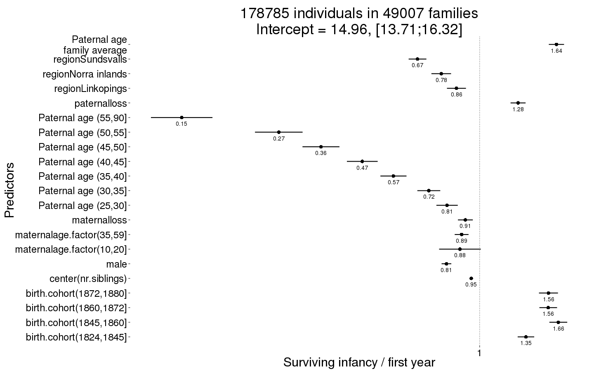
Survive_infancy_boot = plot_factor_response(Survive_infancy)
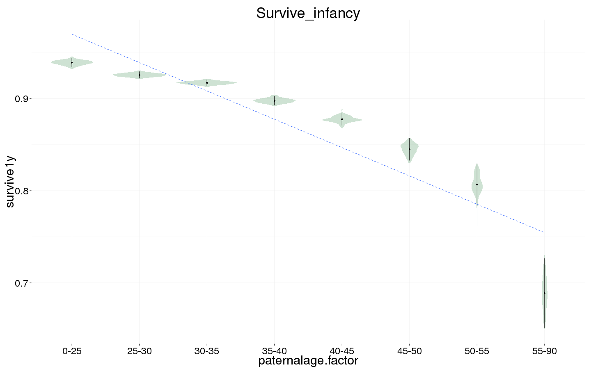
Survival to reproductive age
Survive_reproductive <- bglmer(
surviveR ~ maternalage.factor + paternalloss + maternalloss + center(nr.siblings) + birth.cohort + male + paternalage.mean + paternalage.factor + region + (1|idParents),
data= ddb.1, subset = survive1y == TRUE & byear < 1850,
family = 'binomial', control = control_defaults,
fixef.prior = normal() )
summary(Survive_reproductive)
## Cov prior : idParents ~ wishart(df = 3.5, scale = Inf, posterior.scale = cov, common.scale = TRUE)
## Fixef prior: normal(sd = c(10, 2.5, ...), corr = c(0 ...), common.scale = FALSE)
## Prior dev : 78
##
## Generalized linear mixed model fit by maximum likelihood (Laplace
## Approximation) [bglmerMod]
## Family: binomial ( logit )
## Formula: surviveR ~ maternalage.factor + paternalloss + maternalloss +
## center(nr.siblings) + birth.cohort + male + paternalage.mean +
## paternalage.factor + region + (1 | idParents)
## Data: ddb.1
## Control: control_defaults
## Subset: survive1y == TRUE & byear < 1850
##
## AIC BIC logLik deviance df.resid
## 40741 40929 -20350 40699 55626
##
## Scaled residuals:
## Min 1Q Median 3Q Max
## -4.129 0.236 0.283 0.362 1.141
##
## Random effects:
## Groups Name Variance Std.Dev.
## idParents (Intercept) 0.649 0.805
## Number of obs: 55647, groups: idParents, 18385
##
## Fixed effects:
## Estimate Std. Error z value Pr(>|z|)
## (Intercept) 2.95314 0.07187 41.1 < 2e-16 ***
## maternalage.factor(10,20] -0.17986 0.12350 -1.5 0.14531
## maternalage.factor(35,59] 0.00943 0.03918 0.2 0.80984
## paternalloss -0.45836 0.04432 -10.3 < 2e-16 ***
## maternalloss -0.51463 0.04562 -11.3 < 2e-16 ***
## center(nr.siblings) -0.03461 0.00593 -5.8 5.2e-09 ***
## birth.cohort(1824,1845] 0.12956 0.03331 3.9 0.00010 ***
## birth.cohort(1845,1860] 0.02943 0.05224 0.6 0.57320
## male -0.20378 0.02828 -7.2 5.8e-13 ***
## paternalage.mean 0.29544 0.04196 7.0 1.9e-12 ***
## paternalage.factor(25,30] -0.17330 0.06169 -2.8 0.00496 **
## paternalage.factor(30,35] -0.34005 0.06507 -5.2 1.7e-07 ***
## paternalage.factor(35,40] -0.35962 0.07454 -4.8 1.4e-06 ***
## paternalage.factor(40,45] -0.52380 0.08794 -6.0 2.6e-09 ***
## paternalage.factor(45,50] -0.64533 0.10702 -6.0 1.6e-09 ***
## paternalage.factor(50,55] -0.94413 0.13618 -6.9 4.1e-12 ***
## paternalage.factor(55,90] -1.32103 0.16968 -7.8 6.9e-15 ***
## regionLinkopings -0.77122 0.04674 -16.5 < 2e-16 ***
## regionNorra inlands -0.18571 0.05086 -3.7 0.00026 ***
## regionSundsvalls 0.13472 0.05393 2.5 0.01248 *
## ---
## Signif. codes: 0 '***' 0.001 '**' 0.01 '*' 0.05 '.' 0.1 ' ' 1
##
## Correlation of Fixed Effects:
## (Intr) m.(10, m.(35, ptrnll mtrnll cnt(.) b.(182 b.(184 male
## mtr.(10,20] -0.134
## mtr.(35,59] 0.093 -0.019
## paternallss -0.013 -0.020 0.057
## maternallss -0.043 -0.006 0.034 -0.437
## cntr(nr.sb) -0.060 -0.027 0.045 0.129 0.091
## b.(1824,184 -0.256 0.007 0.025 0.022 0.025 -0.149
## b.(1845,186 -0.180 0.018 0.014 0.012 0.015 -0.123 0.385
## male -0.210 0.010 -0.001 0.010 0.011 0.007 -0.009 -0.008
## paternlg.mn 0.263 -0.102 0.418 0.096 0.077 -0.096 0.155 0.106 -0.003
## ptr.(25,30] -0.677 0.089 -0.115 -0.028 -0.009 0.004 -0.037 -0.028 0.004
## ptr.(30,35] -0.696 0.131 -0.246 -0.041 -0.023 0.003 -0.063 -0.045 0.000
## ptr.(35,40] -0.654 0.139 -0.394 -0.057 -0.030 -0.004 -0.080 -0.052 0.003
## ptr.(40,45] -0.598 0.136 -0.488 -0.073 -0.034 -0.004 -0.090 -0.063 -0.001
## ptr.(45,50] -0.532 0.126 -0.497 -0.075 -0.038 0.009 -0.094 -0.069 0.007
## ptr.(50,55] -0.461 0.117 -0.458 -0.081 -0.032 0.039 -0.094 -0.067 0.008
## ptr.(55,90] -0.422 0.115 -0.439 -0.102 -0.027 0.077 -0.100 -0.065 0.001
## regnLnkpngs -0.470 -0.003 0.041 -0.075 -0.057 0.166 0.166 0.141 -0.002
## rgnNrrinlnd -0.426 -0.014 0.022 -0.020 0.005 0.016 0.176 0.124 -0.009
## rgnSndsvlls -0.380 -0.007 0.039 -0.021 0.014 0.189 0.030 0.034 -0.008
## ptrnl. p.(25, p.(30, p.(35, p.(40, p.(45, p.(50, p.(55, rgnLnk
## mtr.(10,20]
## mtr.(35,59]
## paternallss
## maternallss
## cntr(nr.sb)
## b.(1824,184
## b.(1845,186
## male
## paternlg.mn
## ptr.(25,30] -0.219
## ptr.(30,35] -0.396 0.773
## ptr.(35,40] -0.526 0.718 0.802
## ptr.(40,45] -0.611 0.648 0.755 0.805
## ptr.(45,50] -0.653 0.566 0.682 0.747 0.770
## ptr.(50,55] -0.668 0.478 0.596 0.667 0.699 0.689
## ptr.(55,90] -0.743 0.428 0.557 0.638 0.679 0.679 0.660
## regnLnkpngs 0.037 -0.005 -0.017 -0.030 -0.032 -0.035 -0.032 -0.038
## rgnNrrinlnd 0.036 -0.002 -0.016 -0.027 -0.029 -0.036 -0.036 -0.045 0.633
## rgnSndsvlls 0.041 -0.002 -0.012 -0.022 -0.022 -0.021 -0.022 -0.026 0.608
## rgnNri
## mtr.(10,20]
## mtr.(35,59]
## paternallss
## maternallss
## cntr(nr.sb)
## b.(1824,184
## b.(1845,186
## male
## paternlg.mn
## ptr.(25,30]
## ptr.(30,35]
## ptr.(35,40]
## ptr.(40,45]
## ptr.(45,50]
## ptr.(50,55]
## ptr.(55,90]
## regnLnkpngs
## rgnNrrinlnd
## rgnSndsvlls 0.522
Survive_reproductive_coefs = fortify_mine(Survive_reproductive)
plot_fortified_mer(Survive_reproductive_coefs, "Surviving to reproductive age / 15 years")
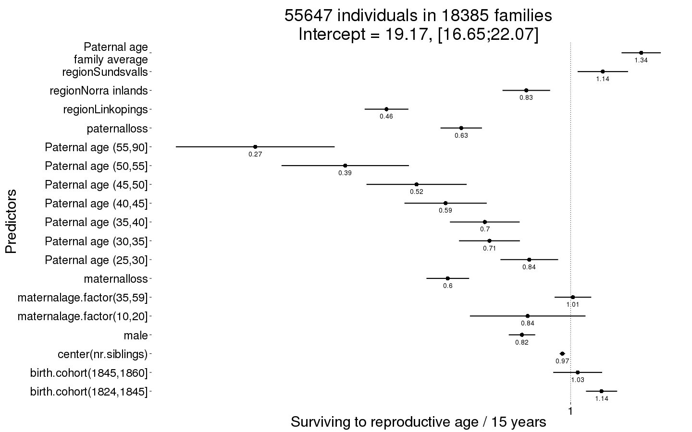
Survive_reproductive_boot = plot_factor_response(Survive_reproductive)
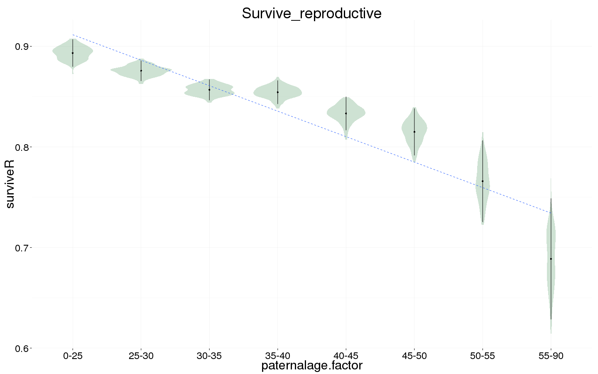
Ever married
Ever_married <- bglmer(
ever_married ~ maternalage.factor + paternalloss + maternalloss + center(nr.siblings) + birth.cohort + male + paternalage.mean + paternalage.factor + region + (1|idParents),
data= ddb.1, subset = surviveR == T,
family = 'binomial', control = control_defaults,
fixef.prior = normal() )
summary(Ever_married)
## Cov prior : idParents ~ wishart(df = 3.5, scale = Inf, posterior.scale = cov, common.scale = TRUE)
## Fixef prior: normal(sd = c(10, 2.5, ...), corr = c(0 ...), common.scale = FALSE)
## Prior dev : 86
##
## Generalized linear mixed model fit by maximum likelihood (Laplace
## Approximation) [bglmerMod]
## Family: binomial ( logit )
## Formula:
## ever_married ~ maternalage.factor + paternalloss + maternalloss +
## center(nr.siblings) + birth.cohort + male + paternalage.mean +
## paternalage.factor + region + (1 | idParents)
## Data: ddb.1
## Control: control_defaults
## Subset: surviveR == T
##
## AIC BIC logLik deviance df.resid
## 115594 115812 -57774 115548 98066
##
## Scaled residuals:
## Min 1Q Median 3Q Max
## -3.538 -0.711 -0.113 0.672 6.359
##
## Random effects:
## Groups Name Variance Std.Dev.
## idParents (Intercept) 0.845 0.919
## Number of obs: 98089, groups: idParents, 32455
##
## Fixed effects:
## Estimate Std. Error z value Pr(>|z|)
## (Intercept) 1.60591 0.04088 39.3 < 2e-16 ***
## maternalage.factor(10,20] 0.15425 0.07060 2.2 0.02889 *
## maternalage.factor(35,59] -0.05236 0.02253 -2.3 0.02011 *
## paternalloss -0.29429 0.02602 -11.3 < 2e-16 ***
## maternalloss -0.28589 0.02665 -10.7 < 2e-16 ***
## center(nr.siblings) -0.04937 0.00355 -13.9 < 2e-16 ***
## birth.cohort(1824,1845] -0.09141 0.02591 -3.5 0.00042 ***
## birth.cohort(1845,1860] -0.40082 0.02721 -14.7 < 2e-16 ***
## birth.cohort(1860,1872] -1.06750 0.02832 -37.7 < 2e-16 ***
## birth.cohort(1872,1880] -2.93074 0.03782 -77.5 < 2e-16 ***
## male -0.40689 0.01549 -26.3 < 2e-16 ***
## paternalage.mean 0.07990 0.02403 3.3 0.00088 ***
## paternalage.factor(25,30] -0.11763 0.03323 -3.5 0.00040 ***
## paternalage.factor(30,35] -0.22860 0.03525 -6.5 8.8e-11 ***
## paternalage.factor(35,40] -0.24781 0.04033 -6.1 8.0e-10 ***
## paternalage.factor(40,45] -0.36589 0.04795 -7.6 2.3e-14 ***
## paternalage.factor(45,50] -0.43949 0.05856 -7.5 6.2e-14 ***
## paternalage.factor(50,55] -0.56171 0.07690 -7.3 2.8e-13 ***
## paternalage.factor(55,90] -0.69331 0.10289 -6.7 1.6e-11 ***
## regionLinkopings -1.38927 0.02899 -47.9 < 2e-16 ***
## regionNorra inlands -0.00959 0.02850 -0.3 0.73638
## regionSundsvalls -0.24200 0.02650 -9.1 < 2e-16 ***
## ---
## Signif. codes: 0 '***' 0.001 '**' 0.01 '*' 0.05 '.' 0.1 ' ' 1
##
## Correlation matrix not shown by default, as p = 22 > 20.
## Use print(x, correlation=TRUE) or
## vcov(x) if you need it
Ever_married_coefs = fortify_mine(Ever_married)
plot_fortified_mer(Ever_married_coefs, "Odds of ever marrying")
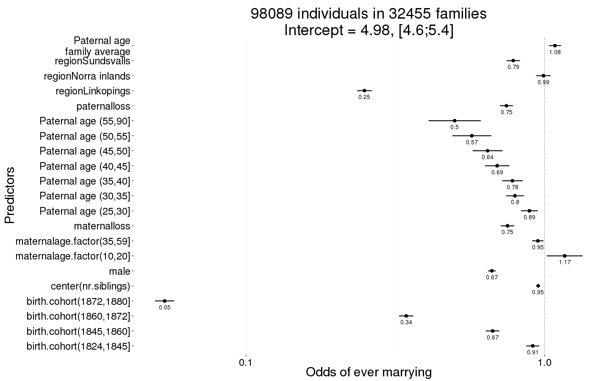
Ever_married_boot = plot_factor_response(Ever_married)
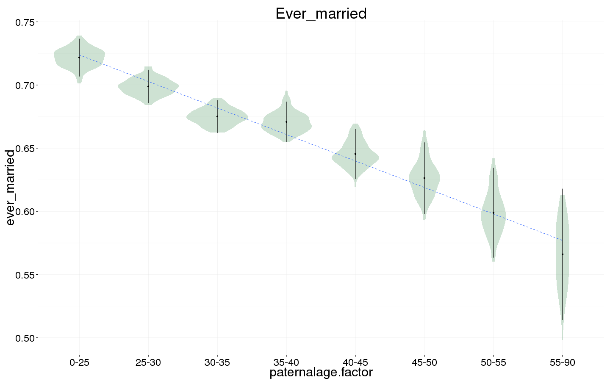
Number of children
Children <- bglmer(
children ~ maternalage.factor + paternalloss + maternalloss + center(nr.siblings) + center(spouses)*male + birth.cohort + paternalage.mean + paternalage.factor + region + (1|idParents) + (1|idIndividu),
data= ddb.1, subset = spouses > 0 & byear < 1850,
family = 'poisson', control = control_defaults,
fixef.prior = normal() )
summary(Children)
## Cov prior : idIndividu ~ wishart(df = 3.5, scale = Inf, posterior.scale = cov, common.scale = TRUE)
## : idParents ~ wishart(df = 3.5, scale = Inf, posterior.scale = cov, common.scale = TRUE)
## Fixef prior: normal(sd = c(10, 2.5, ...), corr = c(0 ...), common.scale = FALSE)
## Prior dev : 90
##
## Generalized linear mixed model fit by maximum likelihood (Laplace
## Approximation) [bglmerMod]
## Family: poisson ( log )
## Formula: children ~ maternalage.factor + paternalloss + maternalloss +
## center(nr.siblings) + center(spouses) * male + birth.cohort +
## paternalage.mean + paternalage.factor + region + (1 | idParents) +
## (1 | idIndividu)
## Data: ddb.1
## Control: control_defaults
## Subset: spouses > 0 & byear < 1850
##
## AIC BIC logLik deviance df.resid
## 150028 150227 -74990 149980 29821
##
## Scaled residuals:
## Min 1Q Median 3Q Max
## -1.7600 -0.6149 0.0525 0.4601 1.4398
##
## Random effects:
## Groups Name Variance Std.Dev.
## idIndividu (Intercept) 0.2767 0.526
## idParents (Intercept) 0.0565 0.238
## Number of obs: 29845, groups: idIndividu, 29845; idParents, 13472
##
## Fixed effects:
## Estimate Std. Error z value Pr(>|z|)
## (Intercept) 1.15191 0.02539 45.4 < 2e-16 ***
## maternalage.factor(10,20] 0.03261 0.03781 0.9 0.388
## maternalage.factor(35,59] 0.02801 0.01267 2.2 0.027 *
## paternalloss -0.02654 0.01849 -1.4 0.151
## maternalloss -0.13873 0.02002 -6.9 4.2e-12 ***
## center(nr.siblings) 0.01025 0.00181 5.7 1.4e-08 ***
## center(spouses) 0.32094 0.01802 17.8 < 2e-16 ***
## male 0.13530 0.02320 5.8 5.5e-09 ***
## birth.cohort(1824,1845] -0.00479 0.01049 -0.5 0.648
## birth.cohort(1845,1860] -0.06537 0.01640 -4.0 6.7e-05 ***
## paternalage.mean 0.00345 0.01331 0.3 0.796
## paternalage.factor(25,30] -0.00283 0.01834 -0.2 0.877
## paternalage.factor(30,35] 0.00628 0.01961 0.3 0.749
## paternalage.factor(35,40] -0.00513 0.02268 -0.2 0.821
## paternalage.factor(40,45] -0.01776 0.02725 -0.7 0.515
## paternalage.factor(45,50] -0.05575 0.03351 -1.7 0.096 .
## paternalage.factor(50,55] -0.03672 0.04411 -0.8 0.405
## paternalage.factor(55,90] -0.02639 0.05909 -0.4 0.655
## regionLinkopings -0.44347 0.01544 -28.7 < 2e-16 ***
## regionNorra inlands 0.01668 0.01353 1.2 0.218
## regionSundsvalls -0.29169 0.01408 -20.7 < 2e-16 ***
## center(spouses):male 0.01834 0.02583 0.7 0.478
## ---
## Signif. codes: 0 '***' 0.001 '**' 0.01 '*' 0.05 '.' 0.1 ' ' 1
##
## Correlation matrix not shown by default, as p = 22 > 20.
## Use print(x, correlation=TRUE) or
## vcov(x) if you need it
Children_coefs = fortify_mine(Children)
plot_fortified_mer(Children_coefs, "Nr. Children (of those who had at least one spouse)")

Children_boot = plot_factor_response(Children)
## Warning in bootMer(fit, mypred, nsim = 100, verbose = T, parallel =
## "multicore", : some bootstrap runs failed (1/100)
## Warning: Removed 8 rows containing non-finite values (stat_ydensity).
## Warning: Removed 8 rows containing missing values (stat_summary).
## Warning: Removed 8 rows containing missing values (stat_smooth).
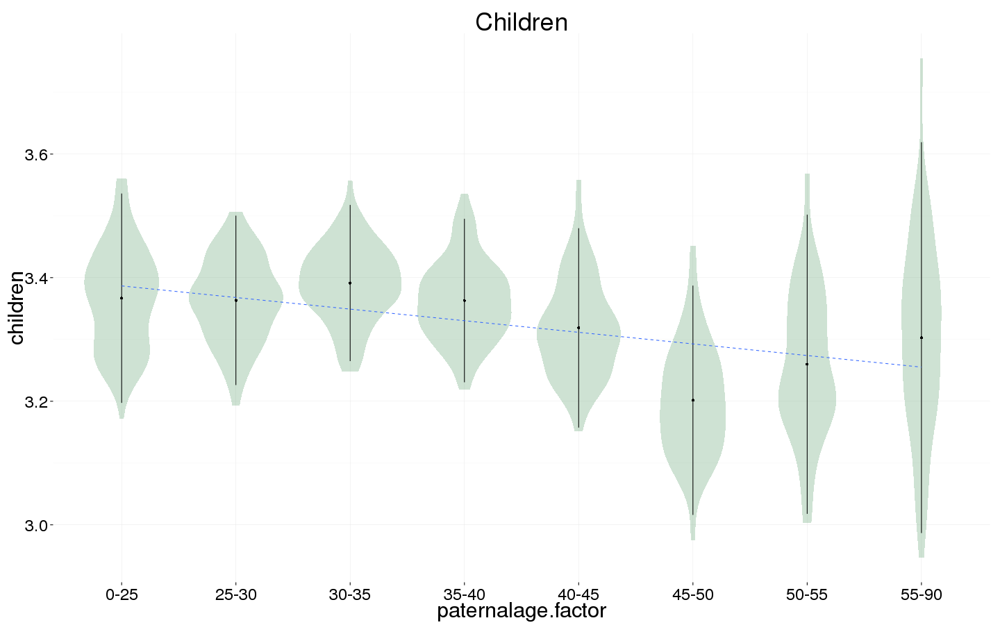
Number of children surviving first year
Children.surviving1y <- bglmer(
children.surviving1y ~ maternalage.factor + paternalloss + maternalloss + center(nr.siblings) + center(children) + birth.cohort + male +paternalage.mean + paternalage.factor + region + (1|idParents) + (1|idIndividu),
data= ddb.1, subset = children > 0 & byear < 1850,
family = 'poisson', control = control_defaults,
fixef.prior = normal() )
## Warning in optwrap(optimizer, devfun, start, rho$lower, control = control,
## : convergence code 1 from bobyqa: bobyqa -- maximum number of function
## evaluations exceeded
summary(Children.surviving1y)
## Cov prior : idIndividu ~ wishart(df = 3.5, scale = Inf, posterior.scale = cov, common.scale = TRUE)
## : idParents ~ wishart(df = 3.5, scale = Inf, posterior.scale = cov, common.scale = TRUE)
## Fixef prior: normal(sd = c(10, 2.5, ...), corr = c(0 ...), common.scale = FALSE)
## Prior dev : 110
##
## Generalized linear mixed model fit by maximum likelihood (Laplace
## Approximation) [bglmerMod]
## Family: poisson ( log )
## Formula:
## children.surviving1y ~ maternalage.factor + paternalloss + maternalloss +
## center(nr.siblings) + center(children) + birth.cohort + male +
## paternalage.mean + paternalage.factor + region + (1 | idParents) +
## (1 | idIndividu)
## Data: ddb.1
## Control: control_defaults
## Subset: children > 0 & byear < 1850
##
## AIC BIC logLik deviance df.resid
## 94186 94374 -47070 94140 26164
##
## Scaled residuals:
## Min 1Q Median 3Q Max
## -6.232 -0.541 0.024 0.500 1.173
##
## Random effects:
## Groups Name Variance Std.Dev.
## idIndividu (Intercept) 3.65e-05 0.00604
## idParents (Intercept) 4.82e-05 0.00694
## Number of obs: 26187, groups: idIndividu, 26187; idParents, 12535
##
## Fixed effects:
## Estimate Std. Error z value Pr(>|z|)
## (Intercept) 0.656495 0.014499 45.3 < 2e-16 ***
## maternalage.factor(10,20] -0.015827 0.025043 -0.6 0.52739
## maternalage.factor(35,59] -0.004626 0.008448 -0.5 0.58397
## paternalloss -0.030862 0.012525 -2.5 0.01374 *
## maternalloss -0.045991 0.013895 -3.3 0.00093 ***
## center(nr.siblings) -0.000397 0.001064 -0.4 0.70897
## center(children) 0.169327 0.000897 188.7 < 2e-16 ***
## birth.cohort(1824,1845] -0.012527 0.006682 -1.9 0.06084 .
## birth.cohort(1845,1860] -0.020757 0.010843 -1.9 0.05557 .
## male -0.009175 0.006015 -1.5 0.12720
## paternalage.mean -0.006530 0.008759 -0.7 0.45598
## paternalage.factor(25,30] -0.003079 0.012447 -0.2 0.80462
## paternalage.factor(30,35] 0.000408 0.013238 0.0 0.97544
## paternalage.factor(35,40] 0.007122 0.015319 0.5 0.64198
## paternalage.factor(40,45] 0.010727 0.018363 0.6 0.55912
## paternalage.factor(45,50] -0.003060 0.022605 -0.1 0.89231
## paternalage.factor(50,55] 0.020146 0.029815 0.7 0.49924
## paternalage.factor(55,90] -0.016507 0.039622 -0.4 0.67697
## regionLinkopings -0.053708 0.010006 -5.4 8.0e-08 ***
## regionNorra inlands -0.038373 0.007733 -5.0 7.0e-07 ***
## regionSundsvalls -0.069989 0.008808 -7.9 1.9e-15 ***
## ---
## Signif. codes: 0 '***' 0.001 '**' 0.01 '*' 0.05 '.' 0.1 ' ' 1
##
## Correlation matrix not shown by default, as p = 21 > 20.
## Use print(x, correlation=TRUE) or
## vcov(x) if you need it
Children.surviving1y_coefs = fortify_mine(Children.surviving1y)
plot_fortified_mer(Children.surviving1y_coefs, "Nr. Children who survive first year (of those who survived infancy)")
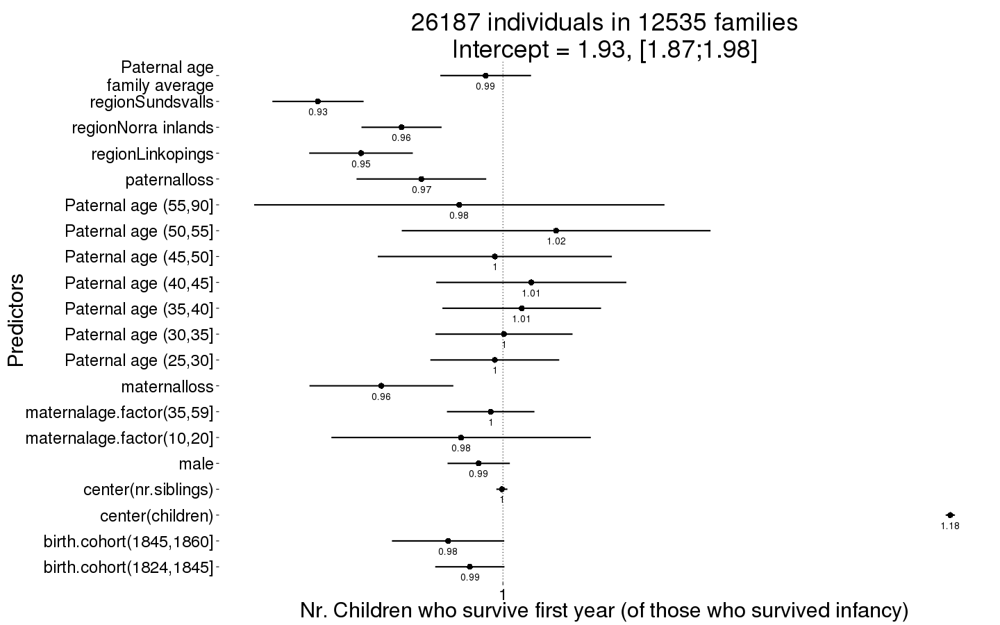
Children.surviving1y_boot = plot_factor_response(Children.surviving1y)
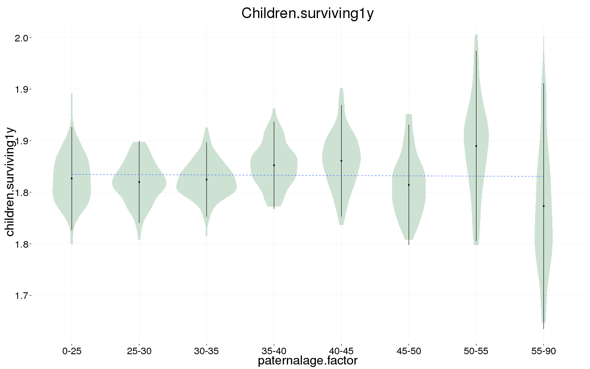
Number of grandchildren
Grandchildren.per.Child <- bglmer(
grandchildren ~ maternalage.factor + paternalloss + maternalloss + center(nr.siblings) + center(children) + birth.cohort + male +paternalage.mean + paternalage.factor + region + (1|idParents) + (1|idIndividu),
data= ddb.1, subset = children > 0 & byear < 1800,
family = 'poisson', control = control_defaults,
fixef.prior = normal() )
## Error in `contrasts<-`(`*tmp*`, value = contr.funs[1 + isOF[nn]]): contrasts can be applied only to factors with 2 or more levels
summary(Grandchildren.per.Child)
## Error in summary(Grandchildren.per.Child): object 'Grandchildren.per.Child' not found
Grandchildren.per.Child_coefs = fortify_mine(Grandchildren.per.Child)
## Error in summary(fit): error in evaluating the argument 'object' in selecting a method for function 'summary': Error: object 'Grandchildren.per.Child' not found
plot_fortified_mer(Grandchildren.per.Child_coefs, "Nr. of grandchildren per child")
## Error in plot_fortified_mer(Grandchildren.per.Child_coefs, "Nr. of grandchildren per child"): object 'Grandchildren.per.Child_coefs' not found
Grandchildren.per.Child_boot = plot_factor_response(Grandchildren.per.Child)
## Error in plot_factor_response(Grandchildren.per.Child): object 'Grandchildren.per.Child' not found
Any surviving children
Any_surviving_children <- bglmer(
any_surviving_children ~ maternalage.factor + paternalloss + maternalloss + center(nr.siblings) + birth.cohort + male + paternalage.mean + paternalage.factor + region + (1|idParents),
data= ddb.1, subset = byear < 1850,
family = 'binomial', control = control_defaults,
fixef.prior = normal() )
summary(Any_surviving_children)
## Cov prior : idParents ~ wishart(df = 3.5, scale = Inf, posterior.scale = cov, common.scale = TRUE)
## Fixef prior: normal(sd = c(10, 2.5, ...), corr = c(0 ...), common.scale = FALSE)
## Prior dev : 78
##
## Generalized linear mixed model fit by maximum likelihood (Laplace
## Approximation) [bglmerMod]
## Family: binomial ( logit )
## Formula: any_surviving_children ~ maternalage.factor + paternalloss +
## maternalloss + center(nr.siblings) + birth.cohort + male +
## paternalage.mean + paternalage.factor + region + (1 | idParents)
## Data: ddb.1
## Control: control_defaults
## Subset: byear < 1850
##
## AIC BIC logLik deviance df.resid
## 80201 80397 -40079 80159 83829
##
## Scaled residuals:
## Min 1Q Median 3Q Max
## -1.932 -0.572 -0.300 -0.098 7.297
##
## Random effects:
## Groups Name Variance Std.Dev.
## idParents (Intercept) 0.605 0.778
## Number of obs: 83850, groups: idParents, 24324
##
## Fixed effects:
## Estimate Std. Error z value Pr(>|z|)
## (Intercept) -0.16338 0.04469 -3.7 0.00026 ***
## maternalage.factor(10,20] -0.09232 0.07969 -1.2 0.24667
## maternalage.factor(35,59] -0.09960 0.02670 -3.7 0.00019 ***
## paternalloss -0.90463 0.03867 -23.4 < 2e-16 ***
## maternalloss -1.41546 0.04192 -33.8 < 2e-16 ***
## center(nr.siblings) -0.04581 0.00421 -10.9 < 2e-16 ***
## birth.cohort(1824,1845] -0.11968 0.02290 -5.2 1.7e-07 ***
## birth.cohort(1845,1860] -0.52082 0.03675 -14.2 < 2e-16 ***
## male -0.04504 0.01849 -2.4 0.01482 *
## paternalage.mean 0.11370 0.02858 4.0 6.9e-05 ***
## paternalage.factor(25,30] -0.01963 0.03863 -0.5 0.61130
## paternalage.factor(30,35] -0.02897 0.04155 -0.7 0.48562
## paternalage.factor(35,40] -0.05300 0.04803 -1.1 0.26988
## paternalage.factor(40,45] -0.17325 0.05776 -3.0 0.00270 **
## paternalage.factor(45,50] -0.22477 0.07115 -3.2 0.00158 **
## paternalage.factor(50,55] -0.30077 0.09293 -3.2 0.00121 **
## paternalage.factor(55,90] -0.61252 0.12385 -4.9 7.6e-07 ***
## regionLinkopings -1.51716 0.03449 -44.0 < 2e-16 ***
## regionNorra inlands 0.01713 0.03234 0.5 0.59643
## regionSundsvalls -0.26443 0.03237 -8.2 3.1e-16 ***
## ---
## Signif. codes: 0 '***' 0.001 '**' 0.01 '*' 0.05 '.' 0.1 ' ' 1
##
## Correlation of Fixed Effects:
## (Intr) m.(10, m.(35, ptrnll mtrnll cnt(.) b.(182 b.(184 male
## mtr.(10,20] -0.134
## mtr.(35,59] 0.092 -0.027
## paternallss -0.003 -0.015 0.056
## maternallss -0.036 -0.004 0.032 -0.431
## cntr(nr.sb) -0.040 -0.022 0.061 0.110 0.086
## b.(1824,184 -0.281 0.010 0.025 0.005 0.021 -0.162
## b.(1845,186 -0.194 0.015 0.013 0.010 0.021 -0.135 0.421
## male -0.208 0.003 0.006 0.006 0.004 0.003 0.003 0.001
## paternlg.mn 0.246 -0.095 0.401 0.084 0.075 -0.114 0.176 0.124 0.005
## ptr.(25,30] -0.671 0.090 -0.120 -0.029 -0.007 0.010 -0.042 -0.029 0.002
## ptr.(30,35] -0.678 0.130 -0.258 -0.044 -0.024 0.017 -0.079 -0.056 -0.003
## ptr.(35,40] -0.635 0.141 -0.407 -0.058 -0.034 0.016 -0.098 -0.070 -0.002
## ptr.(40,45] -0.574 0.137 -0.500 -0.068 -0.036 0.021 -0.105 -0.078 -0.003
## ptr.(45,50] -0.503 0.125 -0.507 -0.074 -0.035 0.035 -0.112 -0.086 -0.002
## ptr.(50,55] -0.421 0.110 -0.452 -0.075 -0.032 0.058 -0.110 -0.082 -0.002
## ptr.(55,90] -0.368 0.101 -0.410 -0.091 -0.026 0.093 -0.109 -0.077 -0.005
## regnLnkpngs -0.406 -0.005 0.047 -0.045 -0.021 0.134 0.165 0.141 -0.006
## rgnNrrinlnd -0.423 -0.017 0.025 -0.032 0.000 0.015 0.180 0.120 -0.007
## rgnSndsvlls -0.392 -0.010 0.053 -0.023 0.011 0.226 0.027 0.031 -0.005
## ptrnl. p.(25, p.(30, p.(35, p.(40, p.(45, p.(50, p.(55, rgnLnk
## mtr.(10,20]
## mtr.(35,59]
## paternallss
## maternallss
## cntr(nr.sb)
## b.(1824,184
## b.(1845,186
## male
## paternlg.mn
## ptr.(25,30] -0.228
## ptr.(30,35] -0.411 0.760
## ptr.(35,40] -0.541 0.704 0.796
## ptr.(40,45] -0.616 0.627 0.741 0.800
## ptr.(45,50] -0.649 0.543 0.667 0.738 0.760
## ptr.(50,55] -0.644 0.448 0.569 0.643 0.672 0.664
## ptr.(55,90] -0.693 0.383 0.509 0.589 0.623 0.623 0.597
## regnLnkpngs 0.043 -0.005 -0.023 -0.036 -0.035 -0.039 -0.039 -0.040
## rgnNrrinlnd 0.038 -0.001 -0.019 -0.030 -0.033 -0.038 -0.040 -0.047 0.530
## rgnSndsvlls 0.048 -0.005 -0.018 -0.027 -0.026 -0.025 -0.027 -0.028 0.536
## rgnNri
## mtr.(10,20]
## mtr.(35,59]
## paternallss
## maternallss
## cntr(nr.sb)
## b.(1824,184
## b.(1845,186
## male
## paternlg.mn
## ptr.(25,30]
## ptr.(30,35]
## ptr.(35,40]
## ptr.(40,45]
## ptr.(45,50]
## ptr.(50,55]
## ptr.(55,90]
## regnLnkpngs
## rgnNrrinlnd
## rgnSndsvlls 0.534
Any_surviving_children_coefs = fortify_mine(Any_surviving_children)
plot_fortified_mer(Any_surviving_children_coefs, "Any surviving children")
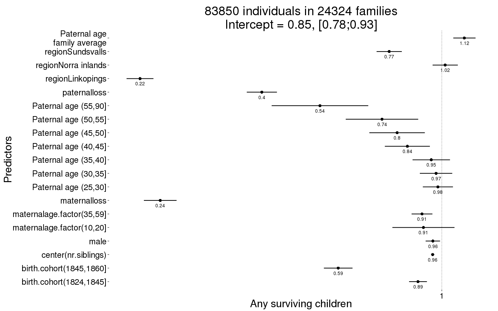
Any_surviving_children_boot = plot_factor_response(Any_surviving_children)
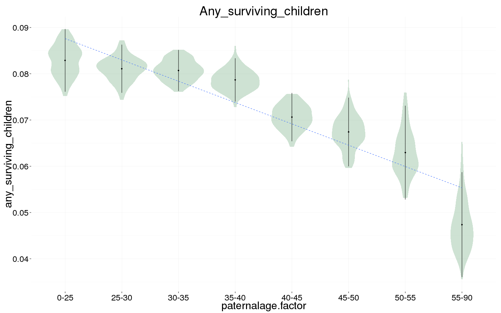